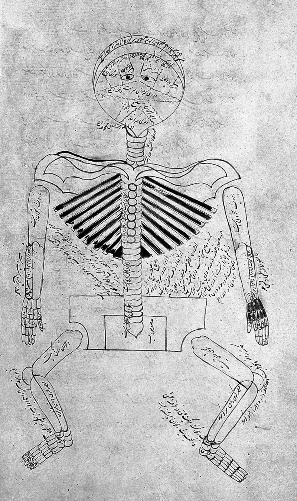
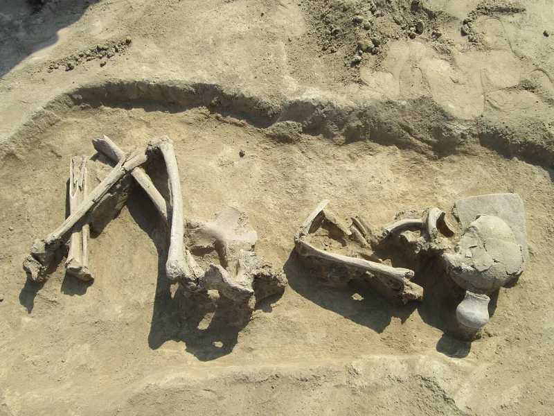

The facts sit in Islam's own trusted sources. You can make this point from their books alone.
"Allah created Adam, making him 60 cubits tall" (Sahih al-Bukhari 3326). That is about 27 to 30 metres, or 90 feet.
The report ends by saying people have been decreasing in stature ever since Adam's creation. Sahih al-Bukhari 6227 and Sahih Muslim 2841 carry it too.
No giant human remains exist anywhere. And the skeletal record runs the other way.
Average height has risen in recent centuries, and no ancient population came near even three metres.
IslamQA 22058 affirms the hadith as it stands and treats the archaeological objection as inconclusive. Others suggest the sixty cubits applies to Adam in Paradise, or to people in Paradise, since whoever enters Paradise will be in the form of Adam.
Notably, Ibn Hajar al-Asqalani flagged the problem in Fath al-Bari in the 15th century. He observed that the dwellings and remains of ancient nations show no such heights, and admitted he could not resolve it.
The Paradise-only reading fails on the report's own last line, which is about people shrinking on earth until now. And the greatest classical commentator on Bukhari conceded the problem six centuries ago without answering it.
They admit the grading, and this is a supporting case, not a lead. Its real payload is not the picture but the method.
This is Bukhari, the collection billed as second only to the Quran, carrying a checkable claim that is false. That reframes every appeal elsewhere that begins with but it is sahih.
"Ibn Hajar said the remains do not show such heights and left it unresolved. What do you do with that?"


They say the height belongs to Paradise, and Ibn Hajar left it unresolved.
IslamQA 22058 affirms the hadith as it stands. It treats the objection from fossils and old remains as inconclusive. Others follow a different suggestion. The sixty cubits belongs to Adam in Paradise, or to people in Paradise. Whoever enters Paradise, the report says, will be in the form of Adam. So it need not describe people on earth.
Notably, Ibn Hajar al-Asqalani had already flagged the problem in Fath al-Bari in the 15th century. He noted that the homes and remains of ancient nations show no such heights. And he admitted he could not resolve it.
Strong for you, but keep it supporting: the payload is the method.
The Paradise-only reading fails. The last line of the hadith is about people shrinking on earth until now. That is plainly about our own history. And the greatest classical commentator on Bukhari granted the clash with the evidence six centuries ago, without answering it.
The real payload here is not the picture but the method. This is Bukhari, the collection billed as second only to the Quran. It carries a claim anyone can check and find false. That reframes every appeal elsewhere that opens with but it is sahih — on Aisha's age, on the fly, on the sun's prostration. Keep it as a supporting case, not a lead.